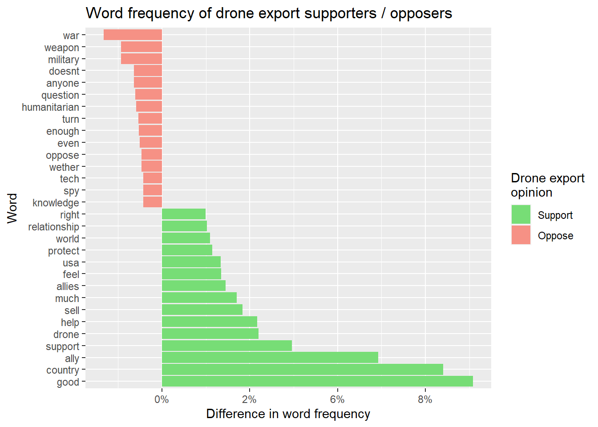
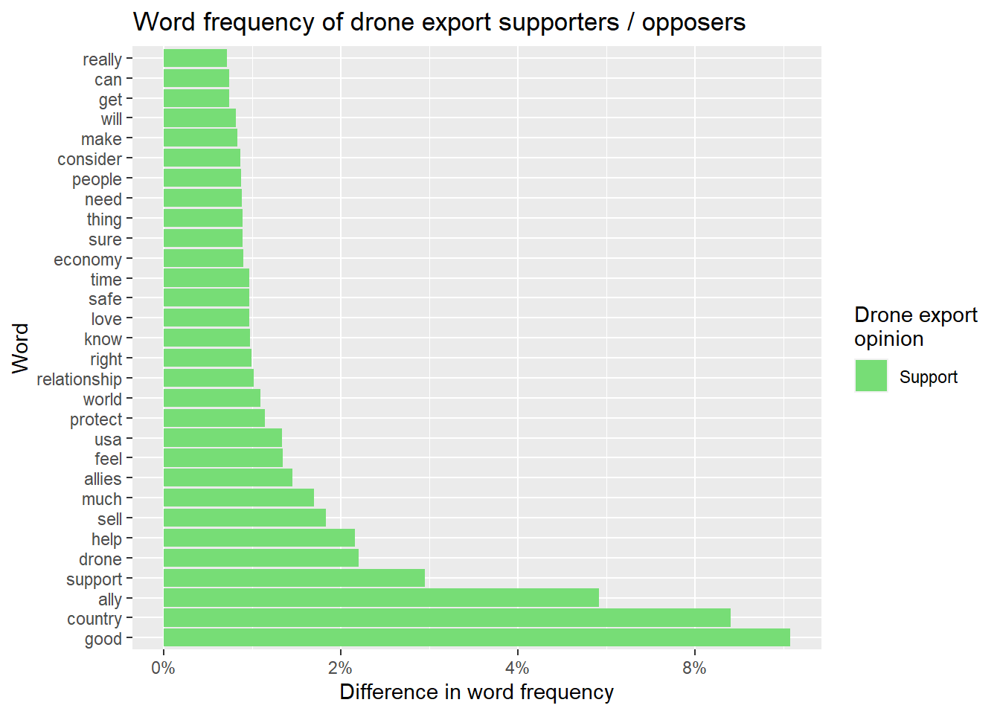
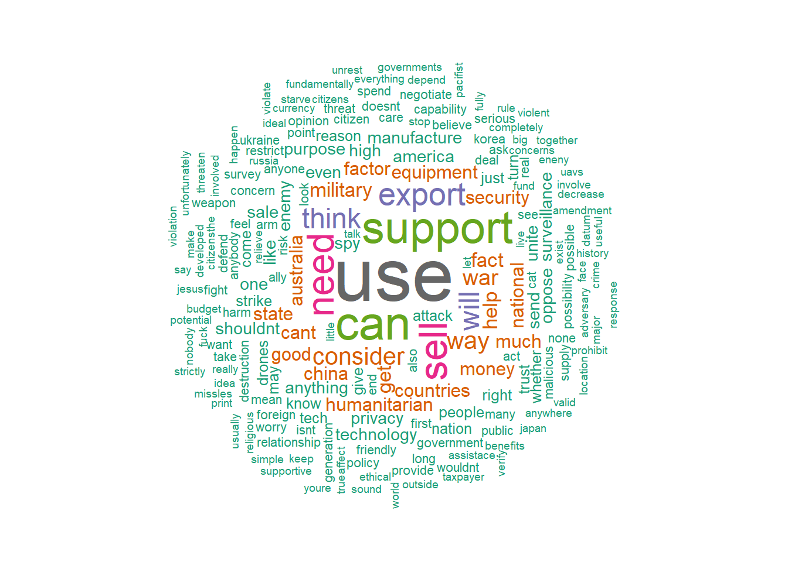
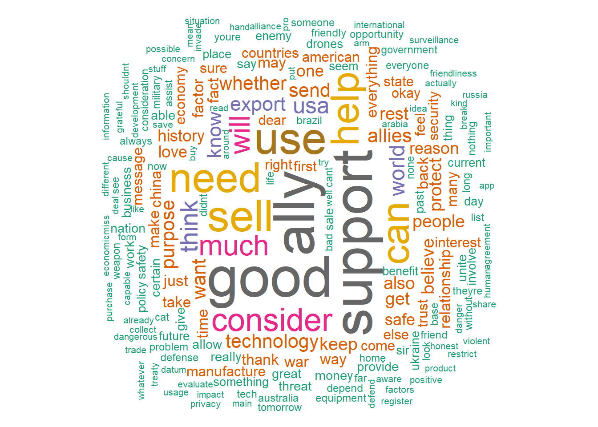

Quarto enables you to weave together content and executable code into a finished document. To learn more about Quarto see https://quarto.org.
# Basiclibrary(tidyverse)
── Attaching core tidyverse packages ──────────────────────── tidyverse 2.0.0 ──
✔ dplyr 1.1.2 ✔ readr 2.1.4
✔ forcats 1.0.0 ✔ stringr 1.5.0
✔ ggplot2 3.4.2 ✔ tibble 3.2.1
✔ lubridate 1.9.2 ✔ tidyr 1.3.0
✔ purrr 1.0.1
── Conflicts ────────────────────────────────────────── tidyverse_conflicts() ──
✖ dplyr::filter() masks stats::filter()
✖ dplyr::lag() masks stats::lag()
ℹ Use the conflicted package (<http://conflicted.r-lib.org/>) to force all conflicts to become errors
library(scales)
Attaching package: 'scales'
The following object is masked from 'package:purrr':
discard
The following object is masked from 'package:readr':
col_factor
library(knitr)# For cleaning / filtering textlibrary(stringr)library(wordcloud)
Loading required package: RColorBrewer
library(tm)
Loading required package: NLP
Attaching package: 'NLP'
The following object is masked from 'package:ggplot2':
annotate
library(janeaustenr)library(textstem)
Loading required package: koRpus.lang.en
Loading required package: koRpus
Loading required package: sylly
For information on available language packages for 'koRpus', run
available.koRpus.lang()
and see ?install.koRpus.lang()
Attaching package: 'koRpus'
The following object is masked from 'package:tm':
readTagged
The following object is masked from 'package:readr':
tokenize
library(syuzhet)
Attaching package: 'syuzhet'
The following object is masked from 'package:scales':
rescale
library(sentimentr)
Attaching package: 'sentimentr'
The following object is masked from 'package:syuzhet':
get_sentences
# For renderinglibrary(rmarkdown)library(stringr)
data1 <-read_csv("data/data1.csv")
Rows: 2146 Columns: 169
── Column specification ────────────────────────────────────────────────────────
Delimiter: ","
chr (169): StartDate, EndDate, Status, IPAddress, Progress, Duration (in sec...
ℹ Use `spec()` to retrieve the full column specification for this data.
ℹ Specify the column types or set `show_col_types = FALSE` to quiet this message.
# The number of total responsespre_length =nrow(data1)# Filtering and cleaning responsesresponse <- data1 |>select(Q6, Q8) |>rename(reason = Q6, # textopinion = Q8 # number )|>mutate(reason =gsub("(\n|<br />)"," ",reason)) |>mutate(reason =gsub("'","",reason)) |>mutate(reason =gsub("’","",reason)) |>drop_na() # Removing first 2 rowsresponse = response[-c(1, 2),]# Reformatting opinion columnresponse$opinion =as.numeric(response$opinion)# Lemmatizing words - reducing them to base formlemmatize <-function(sentence) {return(paste(lemmatize_words(strsplit(sentence, " ")[[1]]),collapse=" "))}response[c("reason")] <-apply(response[c("reason")], 1,lemmatize)# Adding sentence-level sentiments to each response#response |># mutate(sentiment = sentiment(reason)$sentiment) # Function to turn a column into a corpuscreate_corpus <-function(column) {# Creating Corpus for ALL RAW REASONS corpus <-VCorpus(VectorSource(as.vector(column)) ) corpus <- corpus |>tm_map(removeNumbers) |>tm_map(removePunctuation) |>tm_map(stripWhitespace) corpus <-tm_map(corpus, content_transformer(tolower)) corpus <-tm_map(corpus, removeWords, stopwords("english"))return (corpus)}# Corpus for all REASONS q6_corpus =create_corpus(response$reason)# Creating Corpus for OPINIONS & REASONSreason_list <-split(response, response$opinion)opinion_corpus_list <-list()# Corpuses for the REASONS, split per OPINION (1-5)opinion_1_corpus =create_corpus(reason_list[[1]]$reason)opinion_2_corpus =create_corpus(reason_list[[2]]$reason)opinion_3_corpus =create_corpus(reason_list[[3]]$reason)opinion_4_corpus =create_corpus(reason_list[[4]]$reason)opinion_5_corpus =create_corpus(reason_list[[5]]$reason)# Corpuses for the REASONS, split by GENERAL OPINION # where scores of 1 or 2 = oppose & 4 or 5 = support# Creating corpuses for general support / oppositionopinion_support_corpus =create_corpus(rbind(reason_list[[1]], reason_list[[2]])$reason)opinion_oppose_corpus =create_corpus(rbind(reason_list[[4]], reason_list[[5]])$reason)# Calculating the number of real responsespost_length =nrow(response)yield =round(((post_length / pre_length) *100), 3)
The data has 2146 responses. The percentage of non-blank responses is 93.476 %
# Returns a word-frequency matrix from a corpusget_wfm <-function(corpus) { dtm <-TermDocumentMatrix(corpus) matrix <-as.matrix(dtm) words <-sort(rowSums(matrix),decreasing=TRUE) wfm <-data.frame(word =names(words),freq=words)return (wfm)}# Draws the word-frequency graph between 2 corpusesdraw_wfm_diff_graph <-function(corpus_1, corpus_2, n_width, p_width) {# Creating word-frequency matrix opinion_1_wfm =get_wfm(corpus_1) opinion_5_wfm =get_wfm(corpus_2)# Adding negative sign to opposing views opinion_1_wfm <- opinion_1_wfm |>mutate(freq =-freq)# Calculating the relative frequencies opinion_1_wfm <- opinion_1_wfm |>mutate(ratio = freq / (nrow(opinion_1_wfm))) opinion_5_wfm <- opinion_5_wfm |>mutate(ratio = freq / (nrow(opinion_5_wfm)))# Finding the difference in word frequencies opinion_diff <-rbind(opinion_1_wfm, opinion_5_wfm) opinion_diff <- opinion_diff |>group_by(word) |>summarize(diff_freq =sum(ratio)) |>arrange(desc(diff_freq))# Joining the most significant words largest_diff <-rbind(head(opinion_diff, p_width), tail(opinion_diff, n_width))# Drawing the grap largest_diff |>ggplot(aes(reorder(word, -diff_freq, sum), diff_freq, fill = diff_freq <0)) +geom_bar(stat="identity") +coord_flip() +ylab("Difference in word frequency") +xlab("Word") +ggtitle("Word frequency of drone export supporters / opposers") +scale_fill_manual(values=c("#77dd76", "#f69185"),name="Drone export\nopinion",breaks=c("FALSE", "TRUE"),labels=c("Support", "Oppose")) +ylim(-0.1,0.09) +scale_y_continuous(labels = scales::percent_format(accuracy =2)) }draw_wfm_diff_graph(opinion_support_corpus, opinion_oppose_corpus, 15, 15)
Scale for y is already present.
Adding another scale for y, which will replace the existing scale.

The difference in word frequency represents the percentage of the difference between the words used. For example, “good” is featured 8% more frequently in supportive votes than in opposing ones. On the other hand, “war” and “weapon” are featured more frequently in opposing votes.
The reason the word frequencies for supporters peak much more than for people opposing drone exports is because opposing viewpoints tended to use a greater variety of language, whereas drone export supporters mostly used the same words like “good”, “country” and “ally”.
Scale for y is already present.
Adding another scale for y, which will replace the existing scale.

Similarly, looking at the comments by the people supporting drone exports reveals the reasoning behind their opinions.
# Draws a Word Cloud based from a corpusgenerate_wordcloud <-function(corpus) { wfm <-get_wfm(corpus) wfm <- wfm[c(-1, -2),] # removing the words "drone" and "country"set.seed(1234) wordcloud(words = wfm$word, freq = wfm$freq, min.freq =1, max.words=200, random.order=FALSE, rot.per=0.35, colors=brewer.pal(8, "Dark2"))}
# Drawing worldcloud for STRONG OPPOSITION (1)generate_wordcloud(opinion_1_corpus)

A word cloud of words used by people who voted (1), “Strongly Opposing” drone exports.
# Drawing worldcloud for STRONG SUPPORT (5)generate_wordcloud(opinion_5_corpus)

A word cloud of words used by people who voted (5), “Strongly Supporting” drone exports.
response
# A tibble: 2,006 × 2
reason opinion
<chr> <dbl>
1 Ifisbd kz e zkx dnx 3
2 Because its a choice I pick the answer 2
3 Im not sure 4
4 I consider what they do with the technology. 4
5 Nothing 4
6 Jjhhu ask her not sure how I will not go 3
7 The economy, the global impact 5
8 Safety of other country 3
9 Cant let them have too much information 4
10 How do 1
# ℹ 1,996 more rows
#TODO: apply this globally, to the entire dataset, then look at the most negative and most positive sentences. sentiment("hello there this is a cool sentence")$sentiment
[1] 0.2834734
mini <-head(response, 10)mini
# A tibble: 10 × 2
reason opinion
<chr> <dbl>
1 Ifisbd kz e zkx dnx 3
2 Because its a choice I pick the answer 2
3 Im not sure 4
4 I consider what they do with the technology. 4
5 Nothing 4
6 Jjhhu ask her not sure how I will not go 3
7 The economy, the global impact 5
8 Safety of other country 3
9 Cant let them have too much information 4
10 How do 1
mini |>mutate(sentiment =sentiment(reason)$sentiment)
# A tibble: 10 × 3
reason opinion sentiment
<chr> <dbl> <dbl>
1 Ifisbd kz e zkx dnx 3 0
2 Because its a choice I pick the answer 2 0.141
3 Im not sure 4 0
4 I consider what they do with the technology. 4 0.0354
5 Nothing 4 0
6 Jjhhu ask her not sure how I will not go 3 0
7 The economy, the global impact 5 0.179
8 Safety of other country 3 0.4
9 Cant let them have too much information 4 0.605
10 How do 1 0